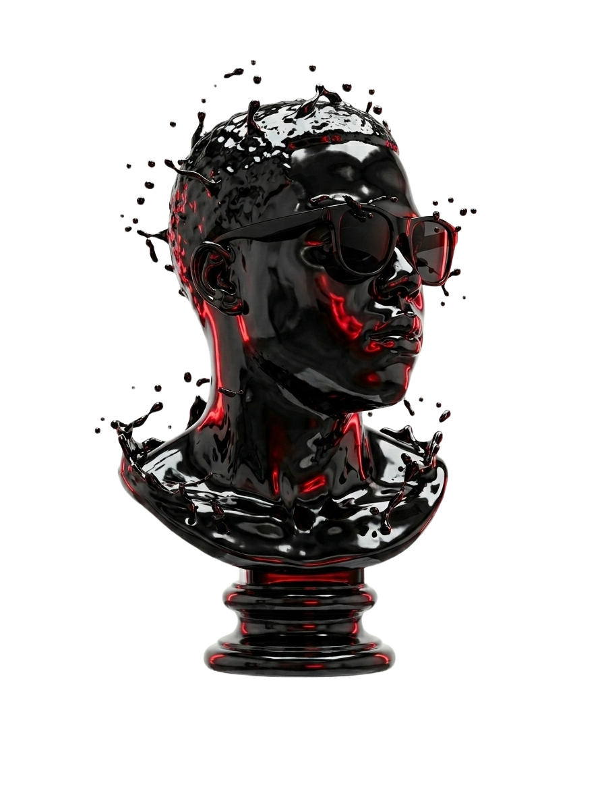

À propos de moi
Je suis Ralaivao Sedera, UI/UX & Web Designer basé à Madagascar. Avec plus de 3 ans d'expérience, je conçois des interfaces digitales qui allient esthétique et fonctionnalité.
Mon approche repose sur une compréhension profonde des besoins utilisateurs associée à une exigence visuelle qui transforme chaque projet en expérience mémorable.
Comprendre le processus de conception d'une brève étude